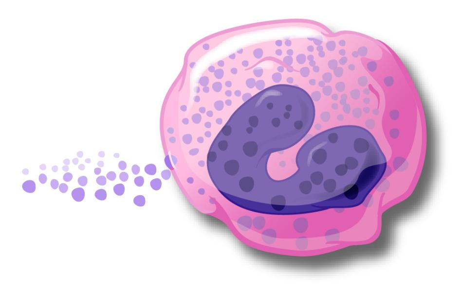
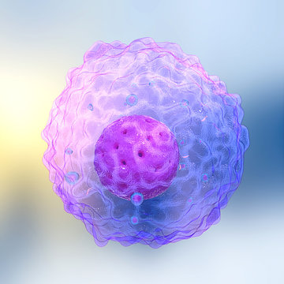
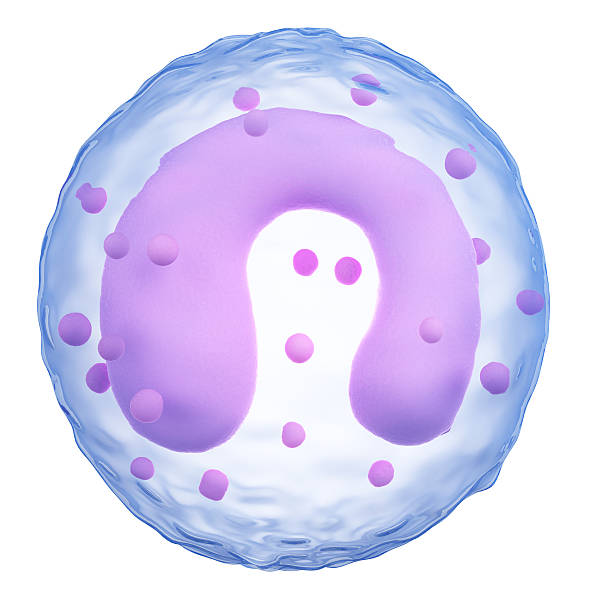

-

Eosinophil
Eosinophils are a type of disease-fighting white blood cell. This condition most often indicates a parasitic infection, an allergic reaction or cancer.Show more...
-

Lymphocytes
Lymphocytes are white blood cells and one of the body’s main types of immune cells. They are made in the bone marrow and found in the blood and lymph tissue.Show more...
-

Monocyte
Monocytes are a type of white blood cell that reside in your blood and tissues to find and destroy germs (viruses, bacteria, fungi) and eliminate infected cells.Show more...
-
 Neutrophil
Neutrophil
Neutrophils are a type of white blood cell. They are essential to the functioning of the immune system, which sees off pathogens such as bacteria and viruses.Show more...